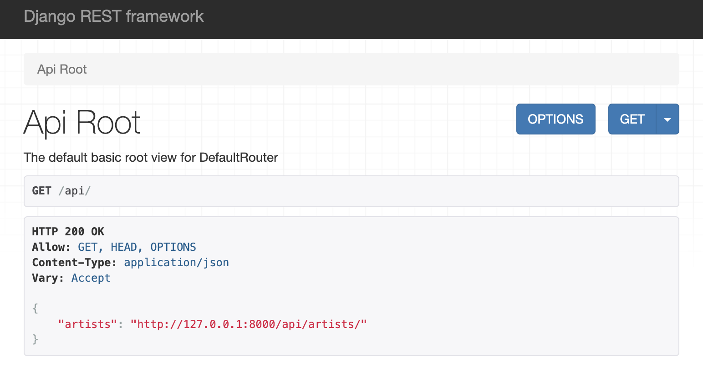
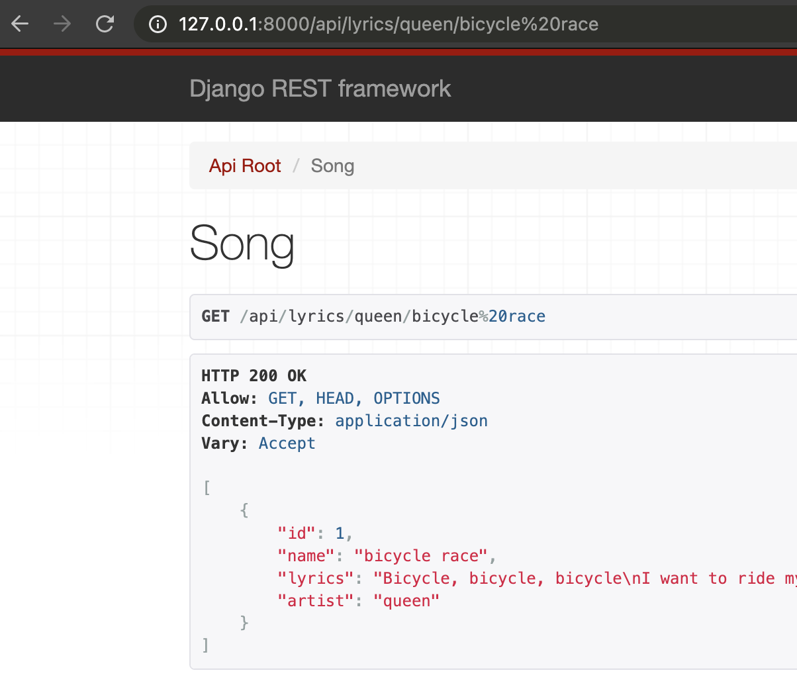

Django REST framework
https://gustavo-salazar.github.io/ProteinFamiliesTalks/drf2021.htmlGustavo A. Salazar
## So, let's make one of those
### Lyrics API
Let's create an API where I can get the lyrics of a song I like.
```txt
[ Client ]
|| /\
|| ||
URL || || Response
|| ||
\/ ||
[ Server ]
```
- URL:
/api/lyrics/queen/bicycle race - Response:
I want to ride my bicycle...
Technology Stack
Make sure you are using Python3
```bash
$ python --version
Python 3.6.13
```
Create a Virtual environment:
```bash
$ mkdir lyrics
$ cd lyrics
$ python -m venv virtualenv
$ source virtualenv/bin/activate
```
Install our dependencies
```bash
$ pip install Django==3.1
$ pip install djangorestframework==3.12.4
$ python -m django --version
3.1
```
Designed to make common Web-development tasks fast and easy.
Some of the things included in Django:
- An opinionated Model-View-Controller web framework
- An Object-Relational mapping with support to multiple DBs.
- Template System
- Development Server
- Generation of Admin Interfaces
- Support for testing
Create a django project
```bash
$ django-admin startproject django4lyrics
$ cd django4lyrics
$ find .
.
./manage.py
./django4lyrics
./django4lyrics/__init__.py
./django4lyrics/settings.py
./django4lyrics/urls.py
./django4lyrics/wsgi.py
./django4lyrics/asgi.py
```
Which you can test in the dev server
```bash
$ python manage.py runserver
Django version 3.1, using settings 'django4lyrics.settings'
Starting development server at http://127.0.0.1:8000/
Quit the server with CONTROL-C.
```
Create an App in this project
```bash
$ python manage.py startapp www
$ find www
.
./__init__.py
./apps.py
./models.py
./migrations
./migrations/__init__.py
./admin.py
./tests.py
./views.py
```
Lets create the first View in `www/views.py`
```python
from django.http import HttpResponse
def index(request):
return HttpResponse("This is the Index of the Lyrics website.")
```
Wiring the URLs in 2 parts.
First create the URL for the App `www/urls.py`
```python
from django.urls import path
from . import views
urlpatterns = [
path('', views.index, name='index'),
]
```
And then include the URLs of the app www into the project `django4lyrics/urls.py`
```python
from django.contrib import admin
from django.urls import include, path
urlpatterns = [
path('www/', include('www.urls')),
path('admin/', admin.site.urls),
] ```
Test it the dev server http://127.0.0.1:8000/
```bash
$ python manage.py runserver
Django version 3.1, using settings 'django4lyrics.settings'
Starting development server at http://127.0.0.1:8000/
Quit the server with CONTROL-C.
```
Let's create a unit test for that View in
`www/tests.py`
```python
from django.test import TestCase
from django.urls import reverse
class IndexViewTests(TestCase):
def test_response_from_index(self):
response = self.client.get(reverse('index'))
self.assertEqual(response.status_code, 200)
self.assertContains(response, "Lyrics")
```
And to run the tests
```bash
$ python manage.py test
Creating test database for alias 'default'...
System check identified no issues (0 silenced).
.
----------------------------------------------------------------------
Ran 1 test in 0.006s
OK
Destroying test database for alias 'default'...
```
### Databases
As a database we will be using SQLite, which is set by deafult in django. If you
want to setup another DB, the place to deal with it is `django4lyrics/settings.py`.
___
Django offers official support to PostgreSQL, MariaDB, MySQL, Oracle and SQLite.
### Models - ORM
A Django model contains the essential fields and behaviors of the data you’re storing.
___
Defining the model of an App in Django consists in creating classes that inherit
from `django.db.models.Model` in the `models.py` of your app.
#### Models for our example
The minimun data we need to have in our DB to be able to display the lyrics of a song is:
* Artist name
* Song name
* Lyrics
We could represent this in different ways, for example a single model with everyting as
an attribute, or multiple interconected models.
#### Models for our example
I'll define models for Artist and Song in `www/models.py`:
```python
from django.db import models
class Artist(models.Model):
name = models.CharField(max_length=200)
class Song(models.Model):
artist = models.ForeignKey(Artist, on_delete=models.CASCADE)
name = models.CharField(max_length=200)
lyrics = models.TextField()
```
In order to start using our model, our app (e.g. www) has to be plugged in the
project(e.g. django4lyrics). We need to add a reference to its
configuration class in the `INSTALLED_APPS` setting (e.g. `django4lyrics/settings.py`).
```python
# ...
INSTALLED_APPS = [
'www.apps.WwwConfig',
'django.contrib.admin',
'django.contrib.auth',
'django.contrib.contenttypes',
'django.contrib.sessions',
'django.contrib.messages',
'django.contrib.staticfiles',
]
# ...
```
And now we can inform django that we have made changes into our model.
```bash
$ python manage.py makemigrations
Migrations for 'www':
www/migrations/0001_initial.py
- Create model Artist
- Create model Song
```
And to reflect those changes in the DB:
```bash
$ python manage.py migrate
Operations to perform:
Apply all migrations: admin, auth, contenttypes, sessions, www
Running migrations:
Applying contenttypes.0001_initial... OK
...
Applying www.0001_initial... OK
$ ls
db.sqlite3 django4lyrics manage.py www
```
Let's create some initial data. First create a fixtures file in `www/fixtures.json`:
```json
[
{
"model": "www.Artist",
"fields": { "id": 1, "name": "queen" }
},
{
"model": "www.Song",
"fields": {
"id": 1,
"artist": 1,
"name": "bicycle race",
"lyrics": "Bicycle, bicycle, bicycle\nI want to ride my\nBicycle, bicycle, bicycle\nI want to ride my bicycle\nI want to ride my bike\nI want to ride my bicycle\nI want to ride it where I like"
}
}
]
```
Now we can use the `loaddata` command from `manage.py`.
```bash
$ python manage.py loaddata www/fixtures.json
Installed 2 object(s) from 1 fixture(s)
```
And finally we can use the model to build our views.
So, lets update the view we created to show how many songs are in our DB:
```python
from django.http import HttpResponse
from www.models import Song
def index(request):
return HttpResponse(
f"This Lyrics website has {Song.objects.count()} songs.")
```
The Django REST Framwork (DRF) is a toolkit for building Web APIs extending Django.
Some features included in DRF are:
* Predifined Serializers, Viewsets, Routers and Renderers
* Web browsable API
* Hyperlinked APIs
Lets create a new app in our django project for the API.
```bash
python manage.py startapp api
```
And include DRF in the `INSTALLED_APPS` in `django4lyrics/settings.py`
```python
INSTALLED_APPS = [
...
'rest_framework',
]
```
DRF adds support for automatic URL routing to Django
Here is how to use it to define the URLs of our API. `api/urls.py`
```python
from django.urls import include, path
from rest_framework import routers
from . import views
router = routers.DefaultRouter()
router.register(r'artists', views.ArtistViewSet)
urlpatterns = [
path('', include(router.urls)),
]
```
DRF extends the concept of Views into Viewsets, that predefine the RESTful actions (GET, POST, PUT, DELETE).
Here is how to create a viewset for artists. `api/views.py`
```python
from rest_framework import viewsets
from www.models import Artist
from . import serializers
class ArtistViewSet(viewsets.ModelViewSet):
queryset = Artist.objects.all()
serializer_class = serializers.ArtistSerializer
```
Serializers allow complex data such as querysets and model instances to be converted to native Python datatypes.
And here is how to create the needed serializer for artists. `api/serializers.py`
```python
from rest_framework import serializers
from www.models import Artist
class ArtistSerializer(serializers.ModelSerializer):
class Meta:
model = Artist
fields = ['id', 'name']
```
That completes our first REST endpoint now accessible from http://127.0.0.1:8000/api/
```bash
$ python manage.py runserver
```

A more complex endpoint
`api/urls.py`
```python
#...
urlpatterns = [
path('', include(router.urls)),
path(r'lyrics/<str:artist>/<str:song>', views.SongView.as_view())
]
```
and remember to add the path below to `django4lyrics/urls.py`
```python
path('api/', include('api.urls')),
```
`api/views.py`
```python
from rest_framework import viewsets
from rest_framework.generics import GenericAPIView
from rest_framework.response import Response
from www.models import Artist, Song
from . import serializers
class ArtistViewSet(viewsets.ModelViewSet):
queryset = Artist.objects.all()
serializer_class = serializers.ArtistSerializer
class SongView(GenericAPIView):
queryset = Song.objects.all()
serializer_class = serializers.SongSerializer
def get(self, request, *args, **kwargs):
try:
artist = self.kwargs['artist']
song = self.kwargs['song']
except ValueError:
raise Http404()
q = self.get_queryset() \
.filter(name=song) \
.filter(artist__name=artist)
if len(q) == 0:
return Response(
{"detail": f"The song [{song}] by [{artist}] was not found"},
status=status.HTTP_404_NOT_FOUND
)
serializer = serializers.SongSerializer(q, many=True)
return Response(serializer.data)
```
`api/serializers.py`
```python
#...
class SongSerializer(serializers.ModelSerializer):
artist = serializers.StringRelatedField(many=False)
class Meta:
model = Song
fields = ['id', 'name', 'lyrics', 'artist' ]
```
`www/models.py`
```python
#...
class Artist(models.Model):
name = models.CharField(max_length=200)
def __str__(self):
return self.name
#...
```
That completes the REST endpoint we were aiming to get today.

Back to the original question:
_How to do Django + React? Or any other JS framework_
2 major options:
1. React (SPA or components) in a Django App
2. React SPA completely independent of a Django REST API.
Links:
* [Slides](https://gustavo-salazar.github.io/ProteinFamiliesTalks/drf2021.html)
* [Demo code](https://github.com/gustavo-salazar/drf-demo)